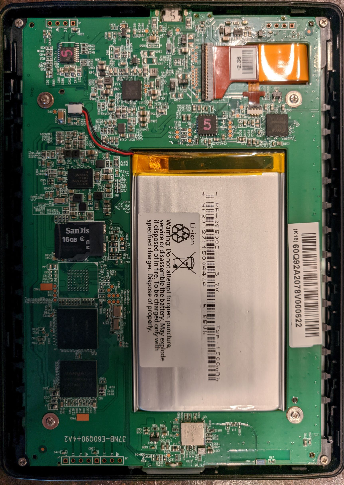

Kobo Glo HD (kobo-glo-hd)
|

Insides |
|
| Manufacturer | Kobo |
|---|---|
| Name | Glo HD |
| Codename | kobo-glo-hd |
| Released | 2015 |
| Category | testing |
| Original software | Kobo Firmware |
| Hardware | |
| Chipset | Freescale i.MX6 SL |
| CPU | 1x 1 GHz Cortex-A9 |
| GPU | PXP + EPDC |
| Display | 1448x1072 6 inch e-paper |
| Storage | Internal 4GB SD slot |
| Memory | 512MB |
| Architecture | armv7 |
{kind=link}
| USB Networking |
|
|---|---|
| Flashing |
|
| Touchscreen |
|
| Display |
|
| WiFi |
|
| FDE |
|
| Mainline |
|
| Battery |
|
| 3D Acceleration |
Unavailable
|
| Audio |
Unavailable
|
| Bluetooth |
Unavailable
|
| Camera |
Unavailable
|
| GPS |
Unavailable
|
| Mobile data |
Unavailable
|
| SMS |
Unavailable
|
| Calls |
Unavailable
|
| USB OTG |
|
| NFC |
|
| Accelerometer |
|
|---|---|
| Magnetometer |
|
| Ambient Light |
|
| Proximity |
|
| Hall Effect |
|
| Ir TX |
|
|---|---|
| TrustZone |
|
Status
Analysis of original software: this device is shipped with Linux 3.0.35, which may be acceptable to port. However, the mainlining effort mentioned above as well as the successful mainline port of the Kobo Clara HD (kobo-clara) shows promise for this device. This device is also shipped with u-boot 2009.08, which is extremely old, meaning that we will likely need to mainline u-boot support. Some work has been started here which is heavily based on the work already done on the Kobo Clara HD. There are reports of having the Tolino Shine 2HD u-boot pmaport worked (which is 2020.10 based).
See also
Almost identical device
-
Tolino_Shine_2HD_(tolino-shine2hd)
- has the same chipset (Freescale i.MX6 Solo Lite) and boots with the original Kobo Glo HD SD card, according to
this
blog post (in German).
it also has a mainlined dts
. PostmarketOS images for that device seem to basically work here.
- Differences seen: less buttons, according to code analysis, led is at a different position.